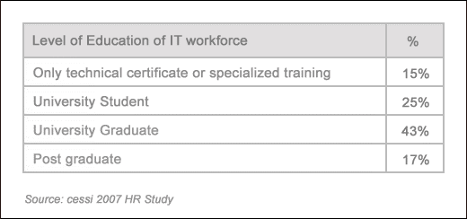
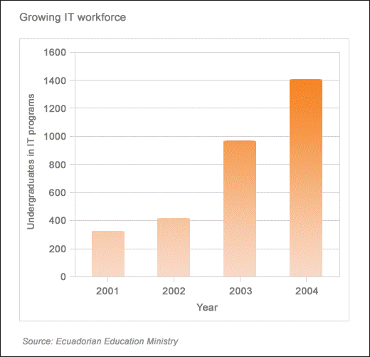

South America might not seem like a possibility when outsourcing software development, but with Argentina and Ecuador emerging as the next IT hotspots, Neubloc encourages companies to rethink their outsourcing destination. Neubloc also offers its development and “follow the sun” models to help companies RightSource the “right” way.
Argentina is not only eagerly adopting IT, it has become a regional leader in the research and development of advanced technologies. With many industries to choose from, Argentina is ideal ground for start-ups and it offers:

Ecuador has excellent university training in technical skills and its institutions offer higher-level degrees in mathematics, engineering, and computer science. Moreover, Ecuador’s growing software industry promises:

Both countries enforce IP laws similar to the US and Europe, unlike their Indian and Chinese counterparts.
Neubloc has extensive experience working with startups from seed stage all the way to their I.P.O. and has overseen all stages of the product development process. By following specific models, Neubloc has RightSourced software design and development throughout the United States, Eastern Europe and South America.
To help make the transition, Neubloc makes rightsourcing to South America easier with their development model by:
Neubloc also uses the “follow the sun” model, which utilizes:
So whether a company is well-developed or just starting out, South America offers a wide variety of skilled labor, reduced IP risk and economically stable grounds for RightSourcing software design and development.